10 Shared options
Option groups taken by several charts, builders or data functions, documented once here. A chart’s page lists the groups it takes and which of their keys (a chart may take only part of a group); builder tables mark the rows of a group with its title.
(ns reference.shared-options
(:require [fastmath.core :as m]
[fastmath.kernel :as k]
[fastmath.random :as r]
[cljplot2.chart :as chart]
[cljplot2.core :as plot]
[cljplot2.data.levels :as levels]
[cljplot2.data.tree :as tree]
[cljplot2.describe :as describe]
[cljplot2.schema :as schema]
[notebook-utils :as nu]))(def wave (for [t (range 30)] {:t t :v (m/sin (m/* 0.3 t)) :g (if (< t 15) "early" "late")}))| t | v | g |
|---|---|---|
| 0 | 0.0 | early |
| 1 | 0.29552020666133955 | early |
| 2 | 0.5646424733950354 | early |
| 3 | 0.7833269096274833 | early |
| 4 | 0.9320390859672263 | early |
| 5 | 0.9974949866040544 | early |
| 6 | 0.9738476308781953 | early |
| 7 | 0.8632093666488737 | early |
| 8 | 0.675463180551151 | early |
| 9 | 0.42737988023383017 | early |
| 10 | 0.1411200080598672 | early |
| 11 | -0.1577456941432482 | early |
| 12 | -0.4425204432948521 | early |
| 13 | -0.6877661591839738 | early |
| 14 | -0.8715757724135882 | early |
| 15 | -0.977530117665097 | late |
| 16 | -0.9961646088358407 | late |
| 17 | -0.9258146823277325 | late |
| 18 | -0.7727644875559877 | late |
| 19 | -0.5506855425976376 | late |
| 20 | -0.27941549819892586 | late |
| 21 | 0.016813900484349713 | late |
| 22 | 0.31154136351337786 | late |
| 23 | 0.5784397643881994 | late |
| 24 | 0.7936678638491527 | late |
| 25 | 0.9379999767747389 | late |
| 26 | 0.998543345374605 | late |
| 27 | 0.9698898108450863 | late |
| 28 | 0.8545989080882804 | late |
| 29 | 0.6629692300821833 | late |
(def counts [{:k "a" :g "x" :v 3} {:k "a" :g "y" :v 2} {:k "b" :g "x" :v 5}
{:k "b" :g "y" :v 4} {:k "c" :g "x" :v 4} {:k "c" :g "y" :v 1}])| k | g | v |
|---|---|---|
| a | x | 3 |
| a | y | 2 |
| b | x | 5 |
| b | y | 4 |
| c | x | 4 |
| c | y | 1 |
Data: Edgar Anderson’s iris measurements, R datasets package iris (Anderson 1935; Fisher 1936); licence: Part of R (GPL-2 | GPL-3).
(def iris (nu/dataset :iris))| sepal-length | sepal-width | petal-length | petal-width | species |
|---|---|---|---|---|
| 5.1 | 3.5 | 1.4 | 0.2 | setosa |
| 4.9 | 3 | 1.4 | 0.2 | setosa |
| 4.7 | 3.2 | 1.3 | 0.2 | setosa |
| 4.6 | 3.1 | 1.5 | 0.2 | setosa |
| 5 | 3.6 | 1.4 | 0.2 | setosa |
| 5.4 | 3.9 | 1.7 | 0.4 | setosa |
| 4.6 | 3.4 | 1.4 | 0.3 | setosa |
| 5 | 3.4 | 1.5 | 0.2 | setosa |
| 4.4 | 2.9 | 1.4 | 0.2 | setosa |
| 4.9 | 3.1 | 1.5 | 0.1 | setosa |
| 5.4 | 3.7 | 1.5 | 0.2 | setosa |
| 4.8 | 3.4 | 1.6 | 0.2 | setosa |
| 4.8 | 3 | 1.4 | 0.1 | setosa |
| 4.3 | 3 | 1.1 | 0.1 | setosa |
| 5.8 | 4 | 1.2 | 0.2 | setosa |
| 5.7 | 4.4 | 1.5 | 0.4 | setosa |
| 5.4 | 3.9 | 1.3 | 0.4 | setosa |
| 5.1 | 3.5 | 1.4 | 0.3 | setosa |
| 5.7 | 3.8 | 1.7 | 0.3 | setosa |
| 5.1 | 3.8 | 1.5 | 0.3 | setosa |
| 5.4 | 3.4 | 1.7 | 0.2 | setosa |
| 5.1 | 3.7 | 1.5 | 0.4 | setosa |
| 4.6 | 3.6 | 1 | 0.2 | setosa |
| 5.1 | 3.3 | 1.7 | 0.5 | setosa |
| 4.8 | 3.4 | 1.9 | 0.2 | setosa |
| 5 | 3 | 1.6 | 0.2 | setosa |
| 5 | 3.4 | 1.6 | 0.4 | setosa |
| 5.2 | 3.5 | 1.5 | 0.2 | setosa |
| 5.2 | 3.4 | 1.4 | 0.2 | setosa |
| 4.7 | 3.2 | 1.6 | 0.2 | setosa |
| 4.8 | 3.1 | 1.6 | 0.2 | setosa |
| 5.4 | 3.4 | 1.5 | 0.4 | setosa |
| 5.2 | 4.1 | 1.5 | 0.1 | setosa |
| 5.5 | 4.2 | 1.4 | 0.2 | setosa |
| 4.9 | 3.1 | 1.5 | 0.2 | setosa |
| 5 | 3.2 | 1.2 | 0.2 | setosa |
| 5.5 | 3.5 | 1.3 | 0.2 | setosa |
| 4.9 | 3.6 | 1.4 | 0.1 | setosa |
| 4.4 | 3 | 1.3 | 0.2 | setosa |
| 5.1 | 3.4 | 1.5 | 0.2 | setosa |
| 5 | 3.5 | 1.3 | 0.3 | setosa |
| 4.5 | 2.3 | 1.3 | 0.3 | setosa |
| 4.4 | 3.2 | 1.3 | 0.2 | setosa |
| 5 | 3.5 | 1.6 | 0.6 | setosa |
| 5.1 | 3.8 | 1.9 | 0.4 | setosa |
| 4.8 | 3 | 1.4 | 0.3 | setosa |
| 5.1 | 3.8 | 1.6 | 0.2 | setosa |
| 4.6 | 3.2 | 1.4 | 0.2 | setosa |
| 5.3 | 3.7 | 1.5 | 0.2 | setosa |
| 5 | 3.3 | 1.4 | 0.2 | setosa |
| 7 | 3.2 | 4.7 | 1.4 | versicolor |
| 6.4 | 3.2 | 4.5 | 1.5 | versicolor |
| 6.9 | 3.1 | 4.9 | 1.5 | versicolor |
| 5.5 | 2.3 | 4 | 1.3 | versicolor |
| 6.5 | 2.8 | 4.6 | 1.5 | versicolor |
| 5.7 | 2.8 | 4.5 | 1.3 | versicolor |
| 6.3 | 3.3 | 4.7 | 1.6 | versicolor |
| 4.9 | 2.4 | 3.3 | 1 | versicolor |
| 6.6 | 2.9 | 4.6 | 1.3 | versicolor |
| 5.2 | 2.7 | 3.9 | 1.4 | versicolor |
| 5 | 2 | 3.5 | 1 | versicolor |
| 5.9 | 3 | 4.2 | 1.5 | versicolor |
| 6 | 2.2 | 4 | 1 | versicolor |
| 6.1 | 2.9 | 4.7 | 1.4 | versicolor |
| 5.6 | 2.9 | 3.6 | 1.3 | versicolor |
| 6.7 | 3.1 | 4.4 | 1.4 | versicolor |
| 5.6 | 3 | 4.5 | 1.5 | versicolor |
| 5.8 | 2.7 | 4.1 | 1 | versicolor |
| 6.2 | 2.2 | 4.5 | 1.5 | versicolor |
| 5.6 | 2.5 | 3.9 | 1.1 | versicolor |
| 5.9 | 3.2 | 4.8 | 1.8 | versicolor |
| 6.1 | 2.8 | 4 | 1.3 | versicolor |
| 6.3 | 2.5 | 4.9 | 1.5 | versicolor |
| 6.1 | 2.8 | 4.7 | 1.2 | versicolor |
| 6.4 | 2.9 | 4.3 | 1.3 | versicolor |
| 6.6 | 3 | 4.4 | 1.4 | versicolor |
| 6.8 | 2.8 | 4.8 | 1.4 | versicolor |
| 6.7 | 3 | 5 | 1.7 | versicolor |
| 6 | 2.9 | 4.5 | 1.5 | versicolor |
| 5.7 | 2.6 | 3.5 | 1 | versicolor |
| 5.5 | 2.4 | 3.8 | 1.1 | versicolor |
| 5.5 | 2.4 | 3.7 | 1 | versicolor |
| 5.8 | 2.7 | 3.9 | 1.2 | versicolor |
| 6 | 2.7 | 5.1 | 1.6 | versicolor |
| 5.4 | 3 | 4.5 | 1.5 | versicolor |
| 6 | 3.4 | 4.5 | 1.6 | versicolor |
| 6.7 | 3.1 | 4.7 | 1.5 | versicolor |
| 6.3 | 2.3 | 4.4 | 1.3 | versicolor |
| 5.6 | 3 | 4.1 | 1.3 | versicolor |
| 5.5 | 2.5 | 4 | 1.3 | versicolor |
| 5.5 | 2.6 | 4.4 | 1.2 | versicolor |
| 6.1 | 3 | 4.6 | 1.4 | versicolor |
| 5.8 | 2.6 | 4 | 1.2 | versicolor |
| 5 | 2.3 | 3.3 | 1 | versicolor |
| 5.6 | 2.7 | 4.2 | 1.3 | versicolor |
| 5.7 | 3 | 4.2 | 1.2 | versicolor |
| 5.7 | 2.9 | 4.2 | 1.3 | versicolor |
| 6.2 | 2.9 | 4.3 | 1.3 | versicolor |
| 5.1 | 2.5 | 3 | 1.1 | versicolor |
| 5.7 | 2.8 | 4.1 | 1.3 | versicolor |
| … | … | … | … | … |
Data: Old Faithful geyser eruptions, R datasets package faithful (Härdle 1991; Azzalini & Bowman 1990); licence: Part of R (GPL-2 | GPL-3).
(def faithful (nu/dataset :faithful))| eruptions | waiting |
|---|---|
| 3.6 | 79 |
| 1.8 | 54 |
| 3.333 | 74 |
| 2.283 | 62 |
| 4.533 | 85 |
| 2.883 | 55 |
| 4.7 | 88 |
| 3.6 | 85 |
| 1.95 | 51 |
| 4.35 | 85 |
| 1.833 | 54 |
| 3.917 | 84 |
| 4.2 | 78 |
| 1.75 | 47 |
| 4.7 | 83 |
| 2.167 | 52 |
| 1.75 | 62 |
| 4.8 | 84 |
| 1.6 | 52 |
| 4.25 | 79 |
| 1.8 | 51 |
| 1.75 | 47 |
| 3.45 | 78 |
| 3.067 | 69 |
| 4.533 | 74 |
| 3.6 | 83 |
| 1.967 | 55 |
| 4.083 | 76 |
| 3.85 | 78 |
| 4.433 | 79 |
| 4.3 | 73 |
| 4.467 | 77 |
| 3.367 | 66 |
| 4.033 | 80 |
| 3.833 | 74 |
| 2.017 | 52 |
| 1.867 | 48 |
| 4.833 | 80 |
| 1.833 | 59 |
| 4.783 | 90 |
| 4.35 | 80 |
| 1.883 | 58 |
| 4.567 | 84 |
| 1.75 | 58 |
| 4.533 | 73 |
| 3.317 | 83 |
| 3.833 | 64 |
| 2.1 | 53 |
| 4.633 | 82 |
| 2 | 59 |
| 4.8 | 75 |
| 4.716 | 90 |
| 1.833 | 54 |
| 4.833 | 80 |
| 1.733 | 54 |
| 4.883 | 83 |
| 3.717 | 71 |
| 1.667 | 64 |
| 4.567 | 77 |
| 4.317 | 81 |
| 2.233 | 59 |
| 4.5 | 84 |
| 1.75 | 48 |
| 4.8 | 82 |
| 1.817 | 60 |
| 4.4 | 92 |
| 4.167 | 78 |
| 4.7 | 78 |
| 2.067 | 65 |
| 4.7 | 73 |
| 4.033 | 82 |
| 1.967 | 56 |
| 4.5 | 79 |
| 4 | 71 |
| 1.983 | 62 |
| 5.067 | 76 |
| 2.017 | 60 |
| 4.567 | 78 |
| 3.883 | 76 |
| 3.6 | 83 |
| 4.133 | 75 |
| 4.333 | 82 |
| 4.1 | 70 |
| 2.633 | 65 |
| 4.067 | 73 |
| 4.933 | 88 |
| 3.95 | 76 |
| 4.517 | 80 |
| 2.167 | 48 |
| 4 | 86 |
| 2.2 | 60 |
| 4.333 | 90 |
| 1.867 | 50 |
| 4.817 | 78 |
| 1.833 | 63 |
| 4.3 | 72 |
| 4.667 | 84 |
| 3.75 | 75 |
| 1.867 | 51 |
| 4.9 | 82 |
| … | … |
10.1 Charts
10.1.1 Common options
Every chart may read its own rows and merge its own mapping over the plot’s - e.g. a reference curve beside the data (Data and mapping chapter) - and leave its key glyph out of the legends.
| Option | Type | Default | Description |
|---|---|---|---|
| :data | a sequence of rows (maps) or a map of columns (sequences) or nil | the plot's :data | the chart's own data instead of the plot's |
| :mapping | a mapping: key -> accessor (a keyword or a function of a row) | the chart's mapping, merged over the plot's mapping (a key set to nil removes it) | |
| :legend | true or false or nil | true | draw the chart's key glyph in the legends (false - the chart adds none, a legend no chart keys is dropped; its aesthetics still scale) |
(plot/render-image {:data wave
:mapping {:x :t :y :v}
:charts [(chart/scatter)
(chart/line {:data (for [t (range 0 30 0.5)] {:t t :v (m/sin (m/* 0.3 t))})})]}
{:width 500 :height 250})
:legend false keeps a chart’s glyph out of the legend while its colours still follow the scale: the rug’s ticks would otherwise be drawn over the scatter’s dots in every key (left). A legend no chart draws a key into is dropped.
(plot/render-image (plot/arrange (for [legend [true false]]
{:data wave
:mapping {:x :t :y :v :color #(if (m/pos? (double (:v %))) "up" "down")}
:charts [(chart/scatter) (chart/rug {:mapping {:y nil} :legend legend})]
:labels {:title (str "rug :legend " legend)}})
{:columns 2})
{:width 800 :height 250})
10.1.2 Annotation options
The rule, rect and text charts mark literal positions. By default their positions count for the scales (the axis reaches them); :extent false leaves them out - the rule at y = 2 is then off the panel (right).
| Option | Type | Default | Description |
|---|---|---|---|
| :extent | true or false or nil | true | include the positions in the scale extents |
(plot/render-image (plot/arrange (for [extent [true false]]
{:data wave
:mapping {:x :t :y :v}
:charts [(chart/line) (chart/rule {:y 2 :extent extent :dash :dashed})]
:labels {:title (str ":extent " extent)}})
{:columns 2})
{:width 800 :height 250})
10.1.3 Line style
Colour, width and dash of the lines of line-like charts (line, rule, segment, smooth, density, ecdf …); a mapped aesthetic wins over the fixed value.
| Option | Type | Default | Description |
|---|---|---|---|
| :color | a clojure2d color or :none | line colour (a mapped :color wins) | |
| :line-width | a non-negative number | line width in pixels | |
| :dash | :none, a dash style (:dashed :dot-dash :dot-dot-dash :dotted :long-dash :loose-dot :solid :two-dash) or a sequence of positive numbers or nil | dash style of the line (a mapped :dash wins) |
(plot/render-image {:data wave
:mapping {:x :t :y :v}
:charts [(chart/line {:color [178 34 34] :line-width 3 :dash [6 2]})]}
{:width 500 :height 250})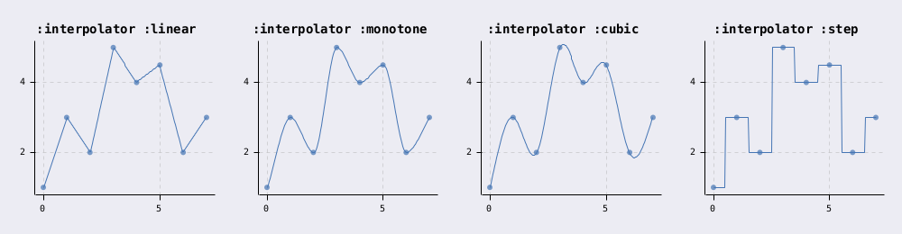
Every built-in dash style (a dash may also be a vector of dash and gap lengths, as above):
(plot/render-image {:charts (vec (mapcat (fn [i d]
[(chart/rule {:y i :dash d :line-width 2})
(chart/text {:x 0 :y i :text (str d) :anchor [:left :bottom]})])
(range 1 100) (:dash describe/attribute-values)))
:scales {:x {:domain [0 1] :axis false} :y {:domain [0 9] :reverse true :axis false}}}
{:width 500 :height 320})
10.1.4 Curves
The line between data points of lines and ribbons: straight, a fastmath interpolation or a step, sampled for drawing.
| Option | Type | Default | Description |
|---|---|---|---|
| :interpolator | a fastmath 1D interpolation method keyword or a function (fn [xs ys & params] f) | interpolation of the line between data points (none - straight segments) | |
| :interpolator-params | vector of any value | extra parameters passed to the interpolation method | |
| :curve | one of :parametric :bezier | path curve instead of a function of x: :parametric (x(t), y(t) over the chord length) or :bezier | |
| :sample-step | a positive number of pixels or {:count n}, n >= 2 | 1.0 | distance between evaluated positions: pixels or {:count n} per run |
(def points (for [x (range 8)] {:x x :y (nth [1 3 2 5 4 4.5 2 3] x)}))| x | y |
|---|---|
| 0 | 1 |
| 1 | 3 |
| 2 | 2 |
| 3 | 5 |
| 4 | 4 |
| 5 | 4.5 |
| 6 | 2 |
| 7 | 3 |
(plot/render-image (plot/arrange (for [interpolator [:linear :monotone :cubic :step]]
{:data points
:mapping {:x :x :y :y}
:charts [(chart/line {:interpolator interpolator}) (chart/scatter)]
:labels {:title (str ":interpolator " interpolator)}})
{:columns 4})
{:width 1000 :height 260})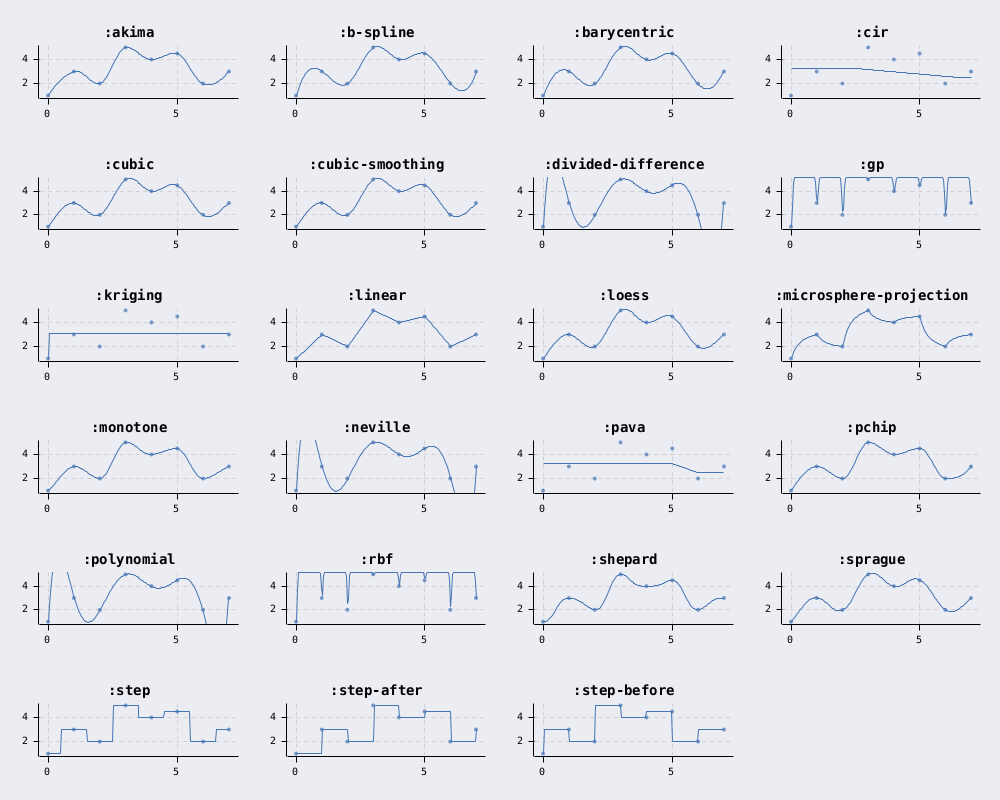
Every interpolation method (schema/interpolation-methods) through the same points, with default parameters - most pass through them or smooth them; :pava and :cir fit a monotone curve - :pava flat runs joined by a step, :cir flat, then sloping; :kriging stays near a constant (its variogram is fitted to the points, by a seeded search, so every render draws the same curve), and :gp / :rbf use a kernel too narrow for points this far apart:
(plot/render-image (plot/arrange (for [interpolator (sort schema/interpolation-methods)]
{:data points
:mapping {:x :x :y :y}
:charts [(chart/line {:interpolator interpolator}) (chart/scatter {:size 4})]
:labels {:title (str interpolator)}})
{:columns 4})
{:width 1000 :height 800})
:interpolator-params are the method’s arguments after the points - for :gp and :rbf a fastmath kernel. A curve is fitted in pixels along the line’s horizontal axis, so the kernel’s width is in pixels: here 60, a bit more than the gap between the points:
(plot/render-image (plot/arrange [{:data points
:mapping {:x :x :y :y}
:charts [(chart/line {:interpolator :gp :interpolator-params [(k/kernel :gaussian {:sigma 60.0})]})
(chart/scatter {:size 4})]
:labels {:title ":gp, gaussian kernel sigma 60"}}
{:data points
:mapping {:x :x :y :y}
:charts [(chart/line {:interpolator :rbf :interpolator-params [(k/rbf :gaussian {:scale 60.0})]})
(chart/scatter {:size 4})]
:labels {:title ":rbf, gaussian scale 60"}}]
{:columns 2})
{:width 800 :height 280})
Without an interpolator, :curve draws a smooth path through the points in their order - also a closed or looping one (:parametric, a Catmull-Rom curve; :bezier, bezier pieces); :sample-step sets how densely a curve is sampled (here coarse, to show the samples):
(plot/render-image (plot/arrange (for [[title opts] [[":curve :parametric" {:curve :parametric}]
[":curve :bezier" {:curve :bezier}]
[":sample-step 25 (cubic)" {:interpolator :cubic :sample-step 25}]]]
{:data points
:mapping {:x :x :y :y}
:charts [(chart/line opts) (chart/scatter {:size 4})]
:labels {:title title}})
{:columns 3})
{:width 1000 :height 260})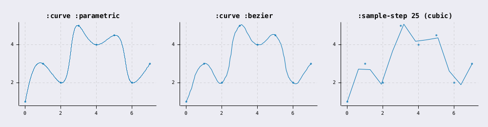
10.1.5 Fill patterns
A pattern drawn over filled marks (bars, areas, boxes, tiles of hierarchies …), in its own colour.
| Option | Type | Default | Description |
|---|---|---|---|
| :pattern | a pattern name (:back-hatch :cross :dense-dots :diagonal-cross :dots :hatch :horizontal :solid :vertical) or a pattern map | pattern drawn over the fill (a mapped :pattern wins) | |
| :pattern-color | :darker or a clojure2d color or :none | pattern ink: a colour, :none or :darker (the darkened fill) |
(plot/render-image {:data (for [[i p] (map-indexed vector [:hatch :back-hatch :cross :dots])] {:p (name p) :v (+ 3 i)})
:mapping {:x :p :y :v :pattern :p}
:charts [(chart/bar {:color :white :stroke-color :black :pattern-color :black})]
:legend false}
{:width 500 :height 260})
10.1.6 Rounded corners
Rounded bar corners: all of them, or only the end away from the baseline.
| Option | Type | Default | Description |
|---|---|---|---|
| :corner-radius | a non-negative number | 0 | radius in pixels of every corner of a bar or rect |
| :corner-radius-end | a non-negative number | radius in pixels of the corners at the bar's value end only (wins over :corner-radius) |
(plot/render-image {:data counts
:mapping {:x :k :y :v :color :g}
:charts [(chart/bar {:corner-radius-end 8})]}
{:width 500 :height 260})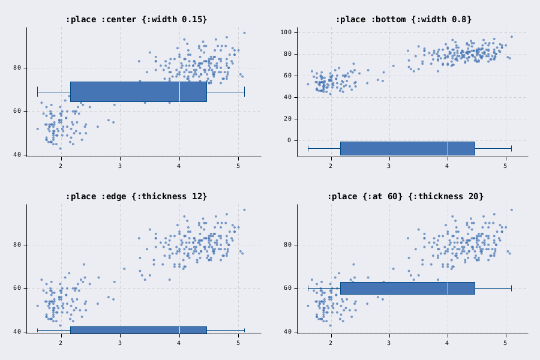
10.1.7 Strip options
Strip charts (bar, box, violin, stripplot, beeswarm, dotplot, rug, bullet, extent) draw one item per level of a categorical axis.
10.1.7.1 Placement
Where the items sit across the value axis, how wide, and which axis holds the levels:
| Option | Type | Default | Description |
|---|---|---|---|
| :place | {:at a finite number} or one of :band :bottom :center :edge | :band with a level mapping, else the chart's own (:center for most, :edge for the rug) | where the items sit across the value axis: :band (one band per level), {:at v} (centred on v of a numeric scale), :center, :edge or :bottom (between the panel edge and 0) |
| :width | a non-negative number | 0.8 | fraction an item spans across the value axis: of the level's band, of the panel for :center, of the room between the panel edge and 0 for :bottom |
| :thickness | a non-negative number | 20 pixels for {:at v}, 8 for :edge | item thickness in pixels for :place {:at v} and :edge |
| :bottom-share | a number in [0 1] | 0.15 with :place :bottom | padding below the data asked for with :place :bottom (only there), a fraction of the y data span |
| :level-axis | one of :x :y | the categorical axis of the mapping; with neither, :x when only :y is mapped, else :y | the mapping axis holding the levels (decides when both or neither of :x and :y are categorical) |
(plot/render-image {:data iris
:mapping {:x :species :y :sepal-length}
:charts [(chart/violin {:width 0.9}) (chart/box {:width 0.15})]}
{:width 500 :height 280})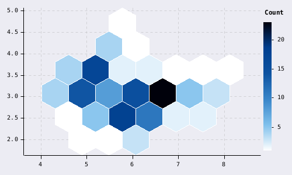
Without levels an item sits by :place: across the panel’s middle (:width a fraction of the panel), below the data (:bottom - the y axis reaches below zero, :width a fraction of the room under zero), at the panel’s edge or at a value of the other axis ({:at v}) - those two :thickness pixels thick. Here a box of the eruption times over the scatter:
(plot/render-image (plot/arrange (for [[place opts] [[:center {:width 0.15}] [:bottom {:width 0.8}]
[:edge {:thickness 12}] [{:at 60} {:thickness 20}]]]
{:data faithful
:mapping {:x :eruptions :y :waiting}
:charts [(chart/scatter {:size 4}) (chart/box (merge {:place place :mapping {:y nil}} opts))]
:labels {:title (str ":place " place " " opts)}})
{:columns 2})
{:width 900 :height 600})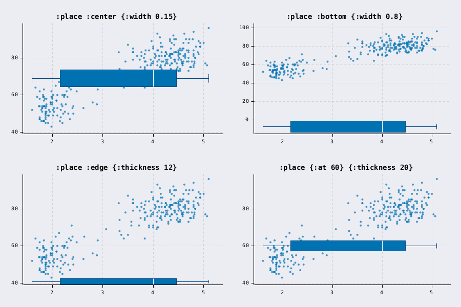
:level-axis names the axis of the levels - needed when both axes or neither are categorical; here the rounded petal widths on y (0 to 3), declared categorical, are the levels, a strip of sepal lengths at each (points spread across the band by the stripplot’s seeded :jitter):
(plot/render-image {:data iris
:mapping {:x :sepal-length :y (levels/categorical #(m/round (:petal-width %)))}
:charts [(chart/stripplot {:level-axis :y :jitter 0.3 :rng (r/rng :mersenne 5)})]
:labels {:x "sepal length" :y "petal width, rounded"}}
{:width 500 :height 280})
10.1.7.2 Groups
Groups of one level share its band: side by side (:dodge, with a gap), on top of each other, or one half each (:mirror).
| Option | Type | Default | Description |
|---|---|---|---|
| :position | one of :dodge :mirror :overlay | :dodge when a level holds two or more groups, else :overlay (dotplot: always :overlay) | how groups of one level share its band: :dodge (side by side), :overlay (on top of each other) or :mirror (two groups, one half each) |
| :dodge-gap | a number in [0 1] | 0.1 | gap between dodged groups, a fraction of a group's part of the band |
(plot/render-image {:data counts
:mapping {:x :k :y :v :color :g}
:charts [(chart/bar {:position :dodge :dodge-gap 0.3})]}
{:width 500 :height 260})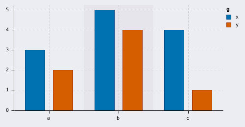
10.1.7.3 Counts
Each item’s row count written past its largest value.
| Option | Type | Default | Description |
|---|---|---|---|
| :n-label | true or false or nil | false | draw each item's row count just past its largest value |
| :n-format | a count format string or a function | "n=%d" | text of the n labels: a format string or a function of the count |
(plot/render-image {:data iris
:mapping {:x :species :y :petal-length}
:charts [(chart/box {:n-label true :n-format "%d flowers"})]}
{:width 500 :height 280})
10.1.8 Mirrored strips
Two groups on the two sides of the value axis, e.g. a population pyramid.
| Option | Type | Default | Description |
|---|---|---|---|
| :mirror | one of :color :shape :size :dash :pattern :group | a grouping dimension with exactly two levels; the second level's items are drawn on the negative side |
(plot/render-image {:data counts
:mapping {:x :k :y :v :color :g}
:charts [(chart/bar {:mirror :color})]
:flip true
:scales {:x {:reverse true}}}
{:width 500 :height 260})
The same mirroring upright, and on a range chart (the second group’s intervals below the axis):
(plot/render-image (plot/arrange [{:data counts
:mapping {:x :k :y :v :color :g}
:charts [(chart/bar {:mirror :color})]
:labels {:title "bar, :mirror :color"}}
{:data iris
:mapping {:x :species :y :sepal-length :color #(if (< (:petal-width %) 1.3) "narrow" "wide")}
:charts [(chart/extent {:mirror :color})]
:labels {:title "extent, :mirror :color"}}]
{:columns 2})
{:width 900 :height 300})
10.1.9 Ridgelines
Histograms and densities over a categorical axis - one row per level, overlapping by :overlap rows.
| Option | Type | Default | Description |
|---|---|---|---|
| :overlap | a non-negative number | 0.9 | height of the tallest ridge in band steps (above 1 - ridges overlap the next level) |
(plot/render-image {:data iris
:mapping {:x :sepal-length :y :species :color :species}
:charts [(chart/density {:overlap 1.8 :fill :color :alpha 0.7})]
:scales {:y {:reverse true}}
:legend false}
{:width 500 :height 300})
10.1.10 Cell style
The cell shape and outline of grid-cell charts (tile, bin2d): any fastmath grid type, scaled. Every cell type binning the same points:
| Option | Type | Default | Description |
|---|---|---|---|
| :cell | one of :square :shifted-square :triangle :rhombus :flat-hex :pointy-hex | cell shape of the grid (a fastmath grid cell type) | |
| :cell-scale | a finite number, > 0, <= 1 | cell polygon size relative to its grid cell, in (0 1] | |
| :stroke-color | :darker or a clojure2d color or :none | cell outline: a colour, :none or :darker (the darkened fill) | |
| :stroke-width | a non-negative number | cell outline width in pixels | |
| :alpha-factor | a number in [0 1] | factor multiplying the fill colours' alpha |
(plot/render-image (plot/arrange (for [cell (:cell describe/attribute-values)]
{:data iris
:mapping {:x :sepal-length :y :sepal-width}
:charts [(chart/bin2d {:cell cell :stroke-color :white})]
:labels {:title (str ":cell " cell)}
:legend false})
{:columns 3})
{:width 900 :height 560})
10.1.11 Fields
Raster and contour charts draw a scalar field.
10.1.11.1 A function
The field as a function of a point over a domain …
| Option | Type | Default | Description | Group |
|---|---|---|---|---|
| :f | a function | the field as a function of a point [x y] returning a number (instead of mapped data) | Fields | |
| :domain | map | the plot's explicit :x and :y scale domains | the domain of a function field | Fields |
| :domain :x (required) | [a finite number, a finite number] | x domain [lo hi] | ||
| :domain :y (required) | [a finite number, a finite number] | y domain [lo hi] |
(plot/render-image {:charts [(chart/contour {:f (fn [[x y]] (+ (* x x) (* 2 y y))) :domain {:x [-2 2] :y [-2 2]}})]}
{:width 450 :height 350})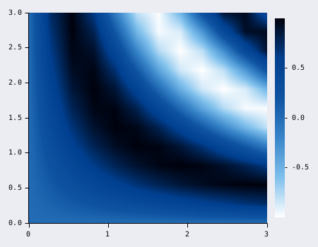
10.1.11.2 A density estimate
… or the kernel density estimate of mapped points …
| Option | Type | Default | Description |
|---|---|---|---|
| :kernel | keyword | :gaussian | fastmath kernel of the 2D density estimate of mapped points |
| :bandwidth | a positive finite number or one of :nrd :nrd0 :nrd-adjust :sj :sj-dpi :rlcv :lcv :lscv :scott or [a positive finite number or one of :nrd :nrd0 :nrd-adjust :sj :sj-dpi :rlcv :lcv :lscv :scott, a positive finite number or one of :nrd :nrd0 :nrd-adjust :sj :sj-dpi :rlcv :lcv :lscv :scott] | :nrd per axis (MASS::kde2d, as ggplot2) | bandwidth of the density estimate: a number, a fastmath selector or :scott, or a pair [hx hy] of them |
| :binned | true or false | false | estimate the density from binned points (faster for many points) |
| :cut | a non-negative finite number | 3 | how many bandwidths the density domain extends past the points on each side |
(plot/render-image {:data iris
:mapping {:x :sepal-length :y :sepal-width}
:charts [(chart/field {:kernel :epanechnikov :bandwidth 0.4}) (chart/scatter {:size 3})]}
{:width 450 :height 350})
10.1.11.3 The grid
… sampled on a grid of :n points per axis (interpolating gridded data with :interpolation).
| Option | Type | Default | Description |
|---|---|---|---|
| :interpolation | one of :bilinear :bicubic :cubic-2d | :bilinear | interpolation of gridded data (mapped :x, :y, :value on a full lattice) |
| :n | integer (2..2000) or [integer (2..2000), integer (2..2000)] | 100 | grid size: values sampled along each axis, or [nx ny] |
(plot/render-image {:charts [(chart/field {:f (fn [[x y]] (m/sin (m/* x y))) :domain {:x [0 3] :y [0 3]} :n 12})]}
{:width 450 :height 350})
10.1.12 Hierarchy labels
Group and leaf labels of treemaps, partitions and circle packings: off, on, or a function writing them.
| Option | Type | Default | Description |
|---|---|---|---|
| :group-labels | true or false or a function or nil | true | group labels: true - the node's name, false - none, or a function of the node info {:name :value :depth :path :share :parent-share} returning the text |
| :leaf-labels | true or false or a function or nil | true | leaf labels: as :group-labels, for the leaves |
(def budget [{:dept "science" :team "physics" :cost 40} {:dept "science" :team "biology" :cost 25}
{:dept "arts" :team "music" :cost 15} {:dept "arts" :team "theatre" :cost 10}
{:dept "sport" :team "football" :cost 20}])| dept | team | cost |
|---|---|---|
| science | physics | 40 |
| science | biology | 25 |
| arts | music | 15 |
| arts | theatre | 10 |
| sport | football | 20 |
(plot/render-image {:data budget
:mapping {:hierarchy [:dept :team] :value :cost}
:charts [(chart/treemap {:group-labels false :leaf-labels #(str (:name %) " " (:value %))})]}
{:width 500 :height 300})
10.1.13 3D frame
3D charts (cloud, surface) draw their data in a box seen in perspective.
10.1.13.1 View
The eye sits at an azimuth and elevation, at a perspective distance; the box has proportions and may mirror axes.
| Option | Type | Default | Description | Group |
|---|---|---|---|---|
| :view | map | the eye's position: azimuth, elevation and perspective distance | 3D frame | |
| :view :azimuth | a finite number | 40.0 | rotation around the vertical axis, degrees | |
| :view :elevation | a finite number, >= -90, <= 90 | 30.0 | angle of the eye above the floor, degrees | |
| :view :distance | a non-negative finite number | 0.0 | perspective: 0 - parallel projection, larger - stronger perspective (lattice distance) | |
| :aspect | [a positive number, a positive number, a positive number] | [1 1 1] | box proportions [ax ay az] | 3D frame |
| :reverse | set of one of :x :y :z | axes running the other way (mirrors the scene) | 3D frame |
(plot/render-image {:data iris
:mapping {:x :sepal-length :y :sepal-width :z :petal-length :color :species}
:charts [(chart/cloud {:view {:azimuth 60 :elevation 20 :distance 0.3} :aspect [1 1 0.6]})]}
{:width 500 :height 400})
10.1.13.2 Axes
The box, the ticks and the axis titles.
| Option | Type | Default | Description | Group |
|---|---|---|---|---|
| :box | true or false or nil | true | draw the box: hidden edges dashed and a floor grid behind the data, visible edges over it | 3D frame |
| :axes | true or false or nil | true | draw ticks, tick labels and axis titles | 3D frame |
| :axis-titles | map | the mapped column names | axis titles (nil - none) | 3D frame |
| :axis-titles :x | any value | x axis title | ||
| :axis-titles :y | any value | y axis title | ||
| :axis-titles :z | any value | z axis title |
(plot/render-image {:data iris
:mapping {:x :sepal-length :y :sepal-width :z :petal-length}
:charts [(chart/cloud {:box false :axis-titles {:x "sepal L" :y "sepal W" :z "petal L"}})]}
{:width 500 :height 400})
10.1.13.3 Domains
Explicit domains - needed when several 3D charts share a plot.
| Option | Type | Default | Description | Group |
|---|---|---|---|---|
| :domain | map | the data's domains | explicit data domains (needed for each of several 3D charts in one plot) | 3D frame |
| :domain :x | [a finite number, a finite number] | explicit x domain [a b] (a > b reverses the axis) | ||
| :domain :y | [a finite number, a finite number] | explicit y domain [a b] (a > b reverses the axis) | ||
| :domain :z | [a finite number, a finite number] | explicit z domain [a b] (a > b reverses the axis) |
(plot/render-image {:data iris
:mapping {:x :sepal-length :y :sepal-width :z :petal-length}
:charts [(chart/cloud {:domain {:x [4 8] :y [2 4.5] :z [0 7]}})]}
{:width 500 :height 400})
10.1.14 3D shading
Shaded 3D faces (surface quads, cloud bars) are lit by Lambert’s law: an ambient share of the colour plus the rest by the face’s angle to the light, whose direction is given in view coordinates (x right, y up, z away from the eye).
| Option | Type | Default | Description |
|---|---|---|---|
| :ambient | a number in [0 1] | 0.4 | share of a shaded face's colour independent of the light (0 - light only, 1 - no shading) |
| :light | [a finite number, a finite number, a finite number] | [-0.5 0.6 -1.0] | direction toward the light [x y z] in view coordinates (x right, y up, z away from the eye), normalized |
The default shading beside a darker ambient share lit from the right, on the surface \(z = \sin(xy)\).
(plot/render-image (plot/arrange [{:charts [(chart/surface {:f (fn [[x y]] (m/sin (m/* x y)))
:domain {:x [-2 2] :y [-2 2]} :color [120 160 220]})]
:labels {:title "default shading"}}
{:charts [(chart/surface {:f (fn [[x y]] (m/sin (m/* x y)))
:domain {:x [-2 2] :y [-2 2]} :color [120 160 220]
:ambient 0.2 :light [1.0 1.0 -0.5]})]
:labels {:title ":ambient 0.2 :light [1 1 -0.5]"}}]
{:columns 2 :title "$z = \\sin(xy)$"})
{:width 800 :height 400})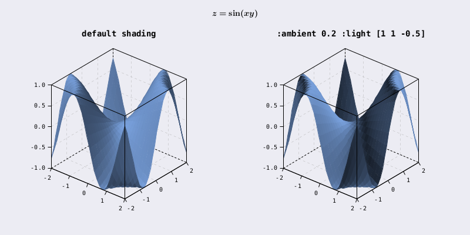
10.1.15 Text style
Font, size, colour, padding, alignment and background of the text chart - also the style of every theme text role (Theme chapter).
| Option | Type | Default | Description |
|---|---|---|---|
| :font | a bundled, installed or logical font name, or a java.awt.Font | font name (bundled, installed or logical) or a java.awt.Font | |
| :size | a positive number | font size in points | |
| :font-style | one of :bold :bold-italic :italic :plain | font style | |
| :color | a clojure2d color or :contrast | text colour; :contrast - black or white by what is behind (a chart's fill under its labels, else the plot background) | |
| :inset | a non-negative number | space between the text and its box edge on every side, in pixels | |
| :align | [h v], h one of :left :center :right, v one of :top :middle :bottom | alignment [horizontal vertical] of the text at its anchor | |
| :background | a clojure2d color or :none | box colour behind the text (:none - no box) | |
| :dollar-math | true or false or nil | true draws text between two dollar signs as a LaTeX formula (a dollar after a backslash stays literal), false keeps every dollar literal; default true |
(plot/render-image {:data wave
:mapping {:x :t :y :v}
:charts [(chart/line)
(chart/text {:x 15 :y 0 :text "a styled note" :size 14 :font-style :bold
:color :white :background [70 90 140] :inset 6})]}
{:width 500 :height 250})
10.2 Builders
10.2.1 Builder options
Title, scales and theme of the plot a builder returns.
| Option | Type | Default | Description |
|---|---|---|---|
| :title | any value | plot title (a text or label options) | |
| :scales | any value | scale specs deep-merged into the builder's (validated with the plot) | |
| :theme | any value | theme overrides of the built plot |
(def flows [{:from "coal" :to "power" :value 30} {:from "gas" :to "power" :value 20} {:from "gas" :to "homes" :value 15}
{:from "power" :to "homes" :value 25} {:from "power" :to "industry" :value 25}])| from | to | value |
|---|---|---|
| coal | power | 30 |
| gas | power | 20 |
| gas | homes | 15 |
| power | homes | 25 |
| power | industry | 25 |
(plot/render-image (plot/sankey flows {:title "Energy flows" :theme {:plot {:background :white}}})
{:width 500 :height 300})
10.2.2 Multiplot layout
The grid of plot/arrange (and of a plot’s :arrange): shape, weights, panel alignment.
| Option | Type | Default | Description |
|---|---|---|---|
| :plots (required) | sequential of map (at least 1) | the sub-plots, filling the grid row by row | |
| :columns | a positive integer or nil | one column (from :rows when given) | grid columns |
| :rows | a positive integer or nil | from the plot count and :columns | grid rows |
| :widths | sequential of a positive number or :measured or [:fixed, a non-negative number] or nil | equal | relative column weights; :measured sizes a column of legend-only plots, [:fixed px] a fixed width |
| :heights | sequential of a positive number or :measured or [:fixed, a non-negative number] or nil | equal | relative row weights; :measured sizes a row of legend-only plots to their legends (scaled down to fit), [:fixed px] a fixed height |
| :row-spans | map of integer (at least 0) to a positive integer or nil | every plot one row | plot index (not cell) -> the rows that plot spans from its own row down (later plots skip the covered cells; rows are added when not given) |
| :align | true or false or nil | true | align the sub-plots' panels in rows and columns |
| :equal-panels | true or false or nil | false | resize columns and rows so every aligned panel has the same size and the gaps between panels are even (builds twice) |
(plot/render-image (plot/arrange [{:data wave :mapping {:x :t :y :v} :charts [(chart/line)]}
{:data wave :mapping {:x :g :y :v} :charts [(chart/box)]}]
{:columns 2 :widths [3 1]})
{:width 700 :height 250})
10.3 Builders and data functions
The options a builder forwards to the data function computing its layout; the function takes them directly too.
10.3.1 Graph
The edge rows’ ends, weight and node ids, optional node rows, directedness. A directed network with node labels (:labels) and a seeded layout (:rng):
| Option | Type | Default | Description |
|---|---|---|---|
| :from | a keyword, a function or a categorical marker of one | :from | accessor of an edge row's source node id |
| :to | a keyword, a function or a categorical marker of one | :to | accessor of an edge row's target node id |
| :value | a keyword, a function or a categorical marker of one | :value | accessor of an edge row's weight, a finite number >= 0 (nil - 1) |
| :nodes | sequential of map or nil | node rows (each with an id), placed first in their order; ids seen only in edges follow | |
| :id | a keyword, a function or a categorical marker of one | :id | accessor of a node row's id |
| :directed | true or false or nil | false | a directed graph: degrees split into :in and :out |
(def edges [{:a "x" :b "y" :w 3} {:a "y" :b "z" :w 1} {:a "z" :b "x" :w 2} {:a "z" :b "u" :w 2}])| a | b | w |
|---|---|---|
| x | y | 3 |
| y | z | 1 |
| z | x | 2 |
| z | u | 2 |
(plot/render-image (plot/network edges {:from :a :to :b :value :w :directed true :labels true :rng (r/rng :mersenne 1)})
{:width 450 :height 300})
10.3.2 Graph layout
Node positions of a network: force-directed, a circle, or random.
| Option | Type | Default | Description |
|---|---|---|---|
| :layout | one of :circle :force :random | :force | node placement: :force (Fruchterman-Reingold), :circle or :random |
| :iterations | integer (at least 0) | 500 | steps of the force layout |
| :gravity | a non-negative finite number | 1.0 | pull of the force layout to each component's centroid, in units of the ideal edge length (0 - none) |
| :rng | a fastmath random generator or nil | a fresh unseeded generator every call | fastmath random generator of the force and random layouts, copied per call (seeded - the same layout every time) |
(plot/render-image (plot/network edges {:from :a :to :b :layout :circle :labels true}) {:width 450 :height 300})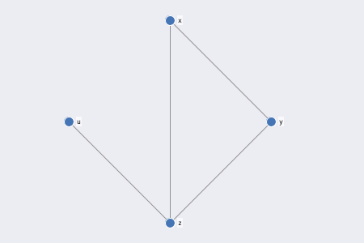
10.3.3 Chord layout
Node order, gaps between sectors, the ring’s inner radius and the smallest drawn flow.
| Option | Type | Default | Description |
|---|---|---|---|
| :order | :cluster or sequential of any value or nil | the nodes' input order | node order: a sequence of ids (those first, the rest after them in input order) or :cluster (nodes linked to the same others side by side) |
| :gap-angle | a non-negative finite number | 2.0 | gap after every ring sector in degrees (must leave room for the sectors) |
| :inner-radius | a number in (0 1) | 0.92 | inner radius of the ring, where the ribbons end (the outer one is 1) |
| :min-value | a non-negative finite number or nil | flows of a pair (summed) below it are left out and counted in :dropped (nil - none) |
(plot/render-image (plot/chord flows {:gap-angle 6 :inner-radius 0.8}) {:width 450 :height 450})10.3.4 Arc layout
Node order along the line.
| Option | Type | Default | Description |
|---|---|---|---|
| :order | :cluster or sequential of any value or nil | the nodes' input order | node order: a sequence of ids (those first, the rest after them in input order) or :cluster (nodes linked to the same others side by side) |
(plot/render-image (plot/arc edges {:from :a :to :b :order :cluster}) {:width 450 :height 250})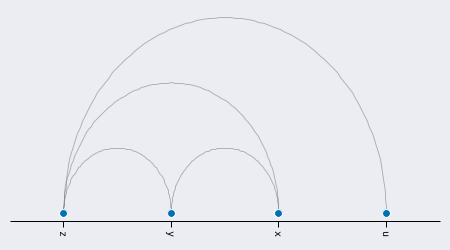
10.3.5 Sankey layout
Columns, node width, gaps and relaxation of a sankey diagram.
| Option | Type | Default | Description |
|---|---|---|---|
| :align | one of :center :justify :left :right | :justify | the column of a node: :justify (sinks in the last column), :left, :right (by the longest path to a sink) or :center |
| :layer | a keyword, a function or a categorical marker of one or nil | columns from :align | accessor of the node rows giving the column (integers >= 0, every edge to a later one; wins over :align) |
| :node-width | a number in (0 1) | 0.03 | node width, a fraction of the unit square's width |
| :gap | a non-negative finite number | 0.02 | least gap between the nodes of a column, a fraction of the unit square's height |
| :iterations | integer (at least 0) | 6 | relaxation sweeps moving the nodes towards their links' ends (0 - spread in the start order) |
| :order | one of :relaxed :input or nil | :relaxed | node order in a column: :relaxed - relaxation reorders it, :input - the input order kept |
(plot/render-image (plot/sankey flows {:align :left :node-width 0.06 :gap 0.08}) {:width 500 :height 300})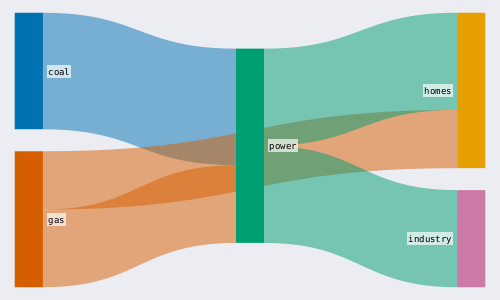
10.3.6 Alluvial graph
The axes (categorical columns) the strands cross, their weights and which axis colours them.
| Option | Type | Default | Description |
|---|---|---|---|
| :variables (required) | sequential of a keyword, a function or a categorical marker of one (at least 2) | accessors of the categorical variables (one column each), in order (at least 2) | |
| :value | a keyword, a function or a categorical marker of one or nil | 1 per row | accessor of a row's weight, a finite number >= 0 (nil - 1) |
| :strand-color | a keyword, a function or a categorical marker of one or nil | the first column | accessor of the level the strands are grouped (and coloured) by |
(plot/render-image (plot/alluvial [{:class "1st" :sex "f" :n 140} {:class "1st" :sex "m" :n 180}
{:class "3rd" :sex "f" :n 190} {:class "3rd" :sex "m" :n 510}]
{:variables [:class :sex] :value :n :strand-color :sex})
{:width 500 :height 300})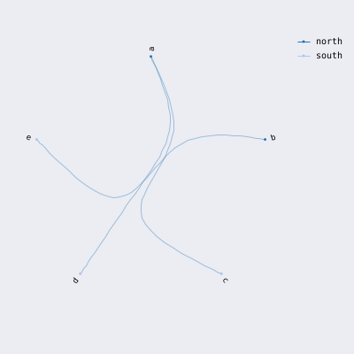
10.3.7 Dendrogram layout
A cut into :k clusters and a circular layout.
| Option | Type | Default | Description |
|---|---|---|---|
| :k | a positive integer or nil | no clusters (every :cluster nil) | cluster count: cutting the k - 1 highest groups leaves k subtrees, clusters 1..k in leaf order (at most the leaf count) |
| :circular | true or false or nil | false | radial: breadth as the angle over :span degrees, height (or depth) as the radius; points in [-1, 1] |
| :span | a positive finite number | 360.0 | degrees a circular layout covers, clockwise from the top |
(def org (tree/from-levels [{:div "north" :team "a"} {:div "north" :team "b"} {:div "south" :team "c"}
{:div "south" :team "d"} {:div "south" :team "e"}]
{:hierarchy [:div :team]}))(plot/render-image (plot/dendrogram org {:k 2}) {:width 450 :height 300})
10.3.8 Node-link tree layout
Tidy or cluster placement, diagonal or straight (:line) links, circular.
| Option | Type | Default | Description |
|---|---|---|---|
| :layout | one of :tidy :cluster | :tidy | node placement: :tidy (every node at its depth, d3 tree) or :cluster (leaves at the deepest depth, d3 cluster) |
| :links | one of :diagonal :line | :diagonal | link shape: :diagonal (curves along the depth axis) or :line |
| :circular | true or false or nil | false | radial: breadth as the angle over :span degrees, height (or depth) as the radius; points in [-1, 1] |
| :span | a positive finite number | 360.0 | degrees a circular layout covers, clockwise from the top |
(plot/render-image (plot/tree org {:layout :cluster :links :line}) {:width 450 :height 300})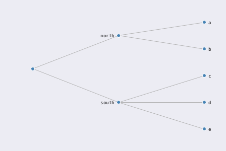
10.3.9 Edge bundling
Edges between the tree’s leaves, bent along the tree with strength :beta.
| Option | Type | Default | Description |
|---|---|---|---|
| :from | a keyword, a function or a categorical marker of one | :from | accessor of an edge row's source leaf id |
| :to | a keyword, a function or a categorical marker of one | :to | accessor of an edge row's target leaf id |
| :beta | a number in [0 1] | 0.85 | bundling strength: 1 - along the tree path, 0 - a straight line |
(plot/render-image (plot/bundle [{:from "a" :to "d"} {:from "b" :to "e"} {:from "a" :to "c"}] org {:beta 0.9})
{:width 400 :height 400})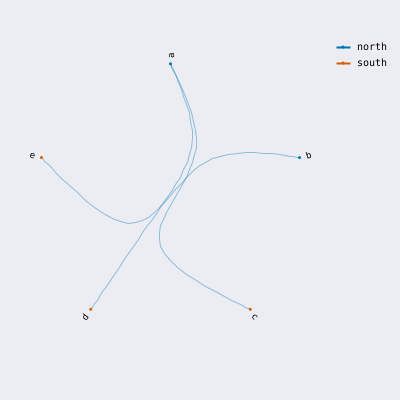
10.3.10 Sequences
Step sequences as text ("home-search-end") split into rings of a flow sunburst.
| Option | Type | Default | Description |
|---|---|---|---|
| :sequence | a keyword, a function or a categorical marker of one | :sequence | accessor of a row's sequence: a string split at :separator or a sequence of steps |
| :value | a keyword, a function or a categorical marker of one or nil | 1 per row | accessor of a row's weight, a finite number >= 0 (nil - 1; identical sequences summed) |
| :separator | string | "-" | literal text splitting a string sequence into steps |
| :end | any value | "end" | the end marker (nil - none): a final step equal to it is removed unless :keep-end |
| :keep-end | true or false or nil | true | keep a final end marker as a step of its own (false - a sequence ending before others continue is its group's unnamed leaf) |
(plot/render-image (plot/sequences [{:sequence "home-search-product" :n 5} {:sequence "home-product" :n 3}
{:sequence "search-product-cart" :n 2}]
{:value :n})
{:width 400 :height 400})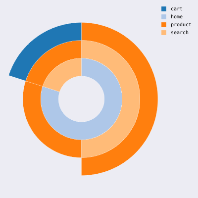
10.3.11 Autocorrelation rows
The lags of the correlogram, the confidence level of its bands and whether the rows are the partial autocorrelation (plot/acf forwards :lags and :level; it picks the correlograms with its own :correlograms).
| Option | Type | Default | Description |
|---|---|---|---|
| :lags | a positive integer or nil | floor(10 log10 n), at most n - 1 (R acf) | the largest lag, from 1 to n - 1 for n values |
| :level | a number in (0 1) or nil | 0.95 | confidence level of the band (0.95 - a 95% band) |
| :partial | true or false or nil | false | the partial autocorrelation (lags from 1, a constant band) instead of the autocorrelation |
(plot/render-image (plot/acf (map #(m/sin (m/* 0.5 %)) (range 100)) {:lags 30 :correlograms :pacf})
{:width 600 :height 300})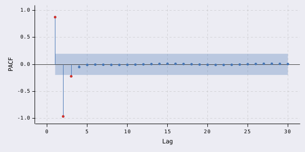
10.3.12 Horizon rows
The keys of the series rows, the number and height of the bands and resampling between points.
| Option | Type | Default | Description |
|---|---|---|---|
| :x | keyword or string | :x | row key of the x values (numbers) |
| :y | keyword or string | :y | row key of the y values (finite numbers, nil breaks the bands) |
| :series | keyword or string or nil | none - one series | row key of the series, one horizon per value in first-appearance order |
| :bands | a positive integer | 2 | number of bands each sign of the values is folded into |
| :band-height | a positive finite number or nil | the largest |y| of all series / :bands (1 when it is 0) | height of one band in y units |
| :interpolator | a fastmath 1D interpolation method keyword or a function (fn [xs ys & params] f) or nil | none - straight segments | a curve the valid points of every run are resampled on before folding |
| :steps-per-gap | a positive integer | 10 | resampled points per gap between consecutive x (with :interpolator) |
(plot/render-image (plot/horizon (for [s ["a" "b"] t (range 60)]
{:x t :y (* (if (= s "a") 1 -1) (m/sin (m/* 0.2 t)) t) :series s})
{:series :series :bands 3})
{:width 600 :height 250})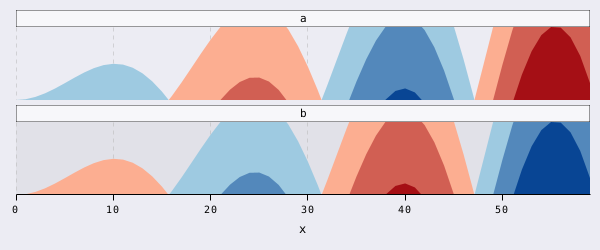
10.3.13 Named theme styles
A chart’s style comes from the theme [:chart kind]; :theme-style names a [:chart name] entry merged over it - a partial style a theme defines once and charts pick by name (builders draw with their own, see each builder’s page). build checks the merged style against the chart’s style keys; a name the theme hasn’t is an error.
| Option | Type | Default | Description |
|---|---|---|---|
| :theme-style | keyword | name of a theme [:chart name] style (a builder's, or one the theme adds) merged over the kind's style |
Highlighted points in a style named :highlight, the rest in the scatter style:
(plot/render-image {:data points
:mapping {:x :x :y :y}
:charts [(chart/scatter)
(chart/scatter {:data (filter #(> (:y %) 4) points) :theme-style :highlight})]
:theme {:chart {:highlight {:size 14 :color [215 48 39] :shape \s}}}}
{:width 500 :height 300})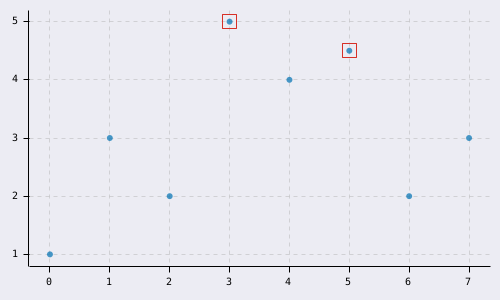
source: notebooks/reference/shared_options.clj